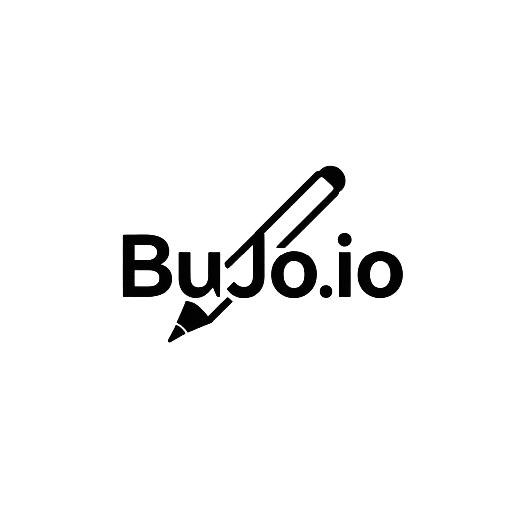

About BuJo.io
Learn more about BuJo.io and its features.
What is BuJo.io?

BuJo.io is a digital bullet journal built for the modern web. Inspired by the analog rapid logging system popularized by Ryder Carroll, BuJo.io brings the flexibility and mindfulness of a physical bullet journal to any browser - without the notebook. At its core, BuJo.io is built around three entry types:
- To-dos track tasks that need to get done, with the ability to mark them complete or migrate them forward when life gets in the way.
- Events capture moments tied to a specific date, from holidays to personal milestones.
- Memories serve as a space for notes, reflections, and anything worth remembering.
Entries are organized across four views — Day, Week, Month, and Year — so users can zoom in on what's happening today or step back and see the bigger picture. The Archive lets users revisit any past period with the same flexible filtering, and the Dashboard gives a at-a-glance summary of entry statistics, this week's activity, and oldest open tasks. BuJo.io is a personal tool, which means it remembers you. During setup, users enter their name, choose their timezone, select a visual theme — Light, Dark, or Paper — and set their preferred font size. These preferences are saved locally and applied across every page automatically. Everything in BuJo.io lives in your browser. There are no accounts, no servers, and no data sent anywhere. Your journal is yours.